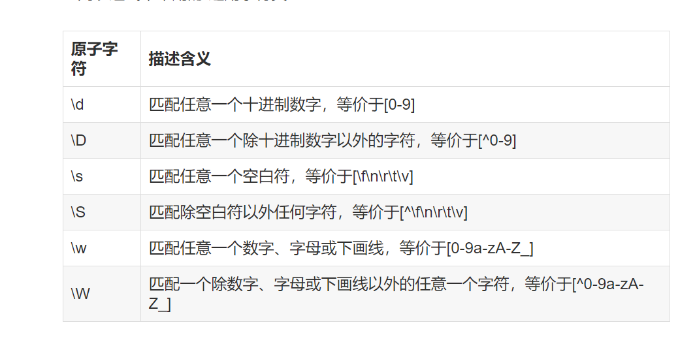
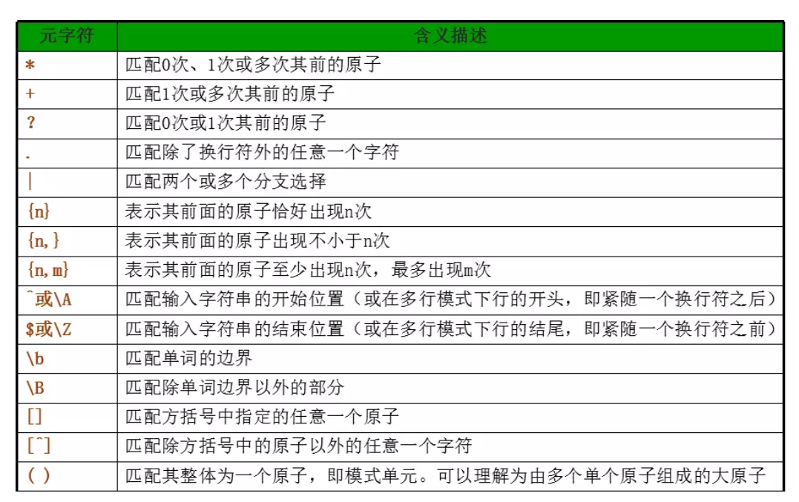
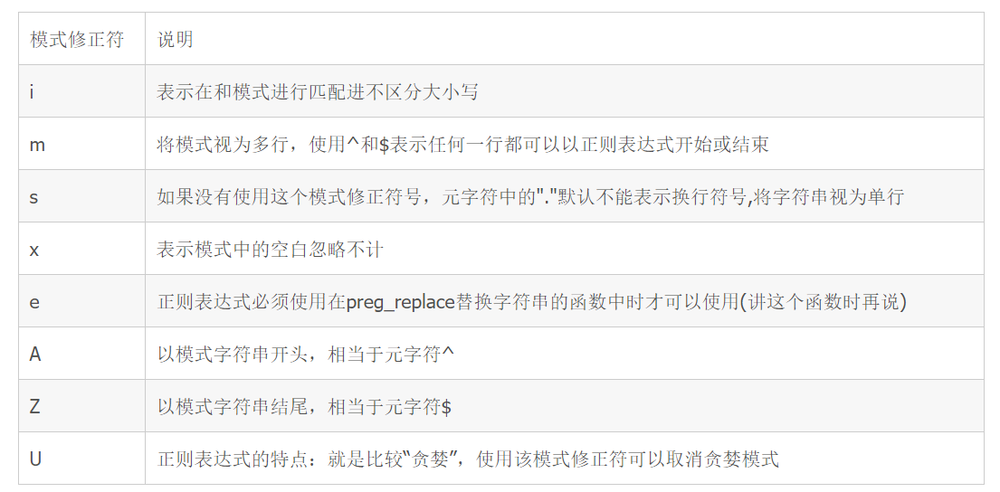

1.正则表达式的作用：分割，查找，匹配，替换 字符串
2.分隔符：正斜线（/）,hash符（#）以及取反符号（~）。
3.通用原子：\d \D \s \S \w \W

4.原子符


6.后向引用
7.贪婪模式
8.正则表达式PCRE函数 prge_match(), preg_match_all(), preg_replace(), preg()_split().
解题方法方法
写出一个要匹配的字符串
自左向右的顺序使用正则表达式的原子和元字符进行拼接
最终加入修正模式
练习常见的正则表达式（手机号码，身份证，email，url等等）
139开头的手机号码
$str = '13988888888';
$partten = '/^139/d{8}$/';
preg_match($partten, str, $match);
var_dump($match);
取出 html页面中所有img标签的sr 的值
$str = '<img id=content"" src="高清无码.jpg" alt="高清无码">';
$partten = '/<img.*?src="(.*?)".*?\/?>/i';
preg_match($partten, $str, $match);
var_dump($march);